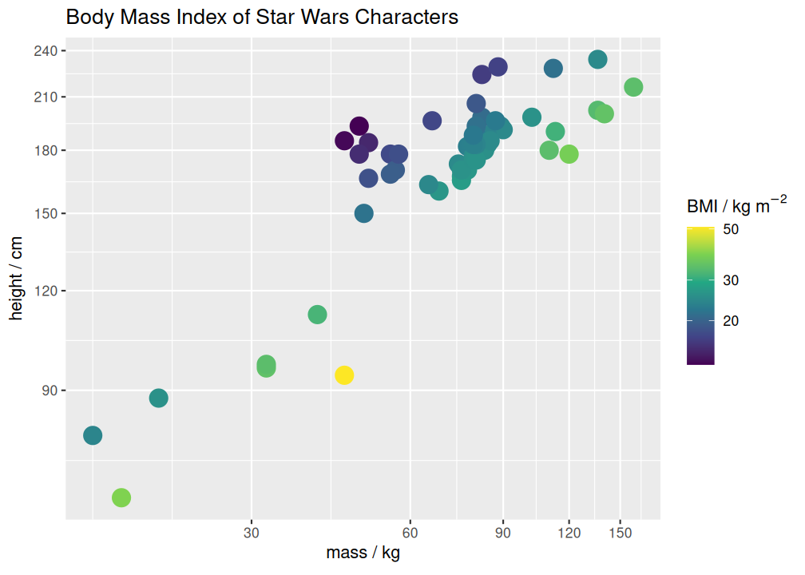

The goal of measure is to integrate automatic unit handling into data analysis workflows.
Installation
You can install the development version of measure like so:
# install.packages("devtools")
devtools::install_github("hrryt/measure")Example
Use measure() to make new measure objects and to convert between units.
Units are handled for you when carrying out arithmetic operations.
bodyindex <- starwars |>
mutate(
mass = measure(mass, "kg"), # add units to a measurement
height = measure(height, "c|m"), # vertical bar indicates SI prefix
bmi0 = mass / height^2, # arithmetic operators preserve units
bmi = measure(bmi0, "kg m^-2") # convert units
) |>
select(name:mass, bmi0:bmi)
bodyindex |> arrange(desc(mass))#> # A tibble: 87 × 5
#> name height mass bmi0 bmi
#> <chr> <measure> <measure> <measure> <measure>
#> 1 Jabba Desilijic Tiure 175 cm 1358 kg 0.0443 kg cm^-2 443. kg m^-2
#> 2 Grievous 216 cm 159 kg 0.00341 kg cm^-2 34.1 kg m^-2
#> 3 IG-88 200 cm 140 kg 0.0035 kg cm^-2 35 kg m^-2
#> 4 Darth Vader 202 cm 136 kg 0.00333 kg cm^-2 33.3 kg m^-2
#> 5 Tarfful 234 cm 136 kg 0.00248 kg cm^-2 24.8 kg m^-2
#> 6 Owen Lars 178 cm 120 kg 0.00379 kg cm^-2 37.9 kg m^-2
#> 7 Bossk 190 cm 113 kg 0.00313 kg cm^-2 31.3 kg m^-2
#> 8 Chewbacca 228 cm 112 kg 0.00215 kg cm^-2 21.5 kg m^-2
#> 9 Jek Tono Porkins 180 cm 110 kg 0.00340 kg cm^-2 34.0 kg m^-2
#> 10 Dexter Jettster 198 cm 102 kg 0.00260 kg cm^-2 26.0 kg m^-2
#> # ℹ 77 more rows
Units are automatically annotated onto ggplot2 plots with ‘enmeasured’ scales.
Every ggplot2 scale has a *_measure equivalent.
breaks <- scales::breaks_extended(7)
bodyindex |>
filter(mass < measure(200, "kg")) |>
ggplot(aes(mass, height, color = bmi)) +
geom_point(size = 5) +
# two methods of achieving the same thing:
scale_x_log10(breaks = breaks) |> enmeasure_scale() +
scale_y_log10_measure(breaks = breaks) +
# units are appended onto the label of an 'enmeasured' scale:
scale_color_viridis_c_measure(trans = "log10") +
labs(color = "BMI", title = "Body Mass Index of Star Wars Characters")
(plays <- lakers |>
tibble() |>
mutate(
date = ymd(date),
time = ms(time),
team,
points = measure(points, "point"),
.keep = "used"
))#> # A tibble: 34,624 × 4
#> date time team points
#> <date> <Period> <chr> <measure>
#> 1 2008-10-28 12M 0S OFF 0 point
#> 2 2008-10-28 11M 39S LAL 0 point
#> 3 2008-10-28 11M 37S LAL 0 point
#> 4 2008-10-28 11M 25S LAL 0 point
#> 5 2008-10-28 11M 23S LAL 0 point
#> 6 2008-10-28 11M 22S LAL 2 point
#> 7 2008-10-28 11M 22S POR 0 point
#> 8 2008-10-28 11M 22S LAL 1 point
#> 9 2008-10-28 11M 0S LAL 0 point
#> 10 2008-10-28 10M 53S POR 2 point
#> # ℹ 34,614 more rows
measure works seamlessly with difftime and hms objects, and lubridate periods, intervals and durations.
Unlike most time objects, measure units are preserved through summary functions.
plays |>
mutate(time = measure(time, "min")) |>
group_by(date, team) |>
summarise(
time = max(time),
points = sum(points),
rate = points / time,
.groups = "keep"
) |>
group_by(team) |>
summarise(
time = first(time),
points = mean(points),
rate = median(rate)
)#> # A tibble: 31 × 4
#> team time points rate
#> <chr> <measure> <measure> <measure>
#> 1 ATL 11.7 min 84.5 point 7.21 point min^-1
#> 2 BOS 11.8 min 96 point 8.13 point min^-1
#> 3 CHA 11.8 min 94 point 7.93 point min^-1
#> 4 CHI 11.7 min 109 point 9.26 point min^-1
#> 5 CLE 11.8 min 89.5 point 7.63 point min^-1
#> 6 DAL 11.9 min 102 point 8.45 point min^-1
#> 7 DEN 11.8 min 92.5 point 7.92 point min^-1
#> 8 DET 11.8 min 91.5 point 7.76 point min^-1
#> 9 GSW 11.8 min 111 point 9.01 point min^-1
#> 10 HOU 11.8 min 89.8 point 7.55 point min^-1
#> # ℹ 21 more rows